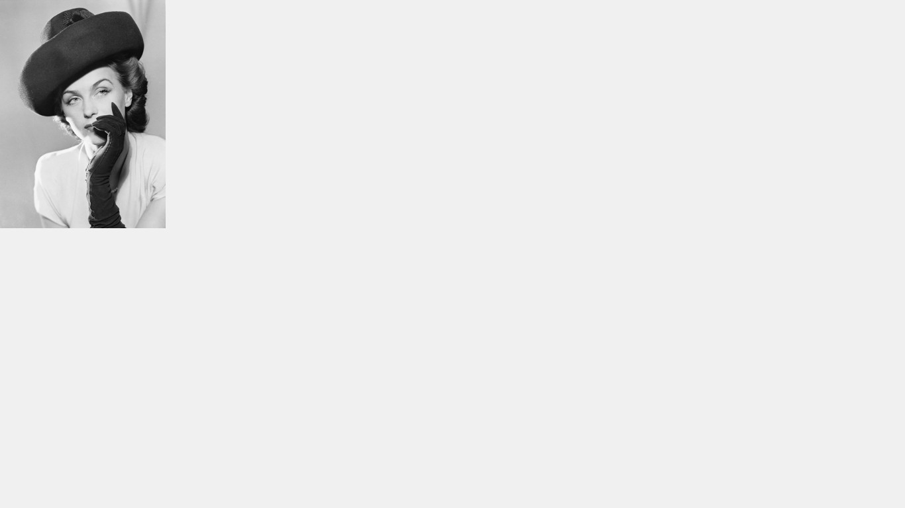
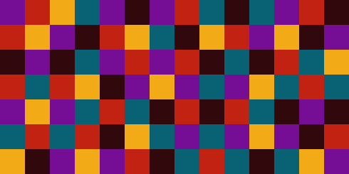
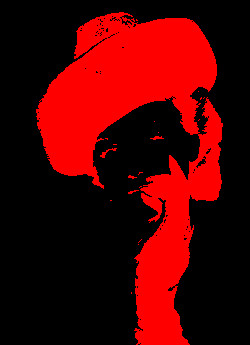
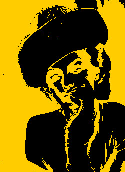

Introduction à la programmation avec Processing
TP3 : Manipulation d'images
Objectif
Dans ce TP vous allez apprendre à afficher une image et chahuter ses pixels.
Afficher une image
Tout d'abord il va nous falloir une image. Comme cette première étape est essentielle au bon déroulement du TP, en voici une que j'aime bien: Je vous conseille de l'utiliser, comme ça vous aurez les mêmes résultats que moi et ça sera plus facile pour comparer.
Nous allons commencer comme pour n'importe quel projet avec Processing, avec le code suivant :
void setup(){
size(displayWidth,displayHeight);
background(255,255,255);
}
void draw(){
}
Pour rappel la fonction setup() contient des instructions qui ne seront exécutées
qu'une seule fois, au lancement de notre programme, tandis que la fonction draw()
est appellée plusieurs fois par seconde, tout le temps que notre programme fonctionne.
Enregistrez le projet (vous pouvez lui donner un nom très original comme tp2). Processing va créer un répertoire du même nom que votre projet dans lequel vous trouvez un fichier .pde qui contient votre code. Juste à côté de ce fichier, copiez votre image. Pour la suite de ce tp, je supposerai qu'elle porte le doux nom de img.jpg.
Pour pouvoir l'utiliser, nous allons stocker notre image dans une variable, de type PImage, que nous appellerons monImage. Modifiez juste un tout petit peu le programme précédent :
PImage monImage; // La modification importante est ici !!!
void setup(){
size(displayWidth,displayHeight);
background(240);
}
void draw(){
}
Et maintenant attention, les choses sérieuses commencent ! Nous allons nous placer
à l'intérieur de la fonction setup et écrire les lignes de code suivantes :
monImage = loadImage("im.jpg");: pour stocker notre image, dans la variable monImagecopy(monImage,0,0,monImage.width,monImage.height,0,0,monImage.width,monImage.height);: pour dessiner l'image. Vous devriez obtenir l'affichage suivant :

Exercice 1
La dernière ligne de code est un peu obscure :
- Allez voir sa documentation
- Comment faire pour que le coin supérieur gauche de notre image se situe au pixel de coordonnée (50,10) ?
- Comment faire pour diminuer par 2 la taille de notre image (parce que c'est pas pour dire, mais là, elle déborde un peu...) ?
Pixels
Vous le savez sans doute, mais une image est une grille rectangulaire. Chaque élément de la grille est appelé pixel et possède une couleur. Concrètement cela veut dire qu'une PImage est composée d'au moins trois choses :
- sa largeur :
monImage.width - sa haureur :
monImage.height - des pixels :
monImage.pixels
La largeur correspond au nombre de pixels qu'on peut compter de la droite vers la gauche. La hauteur correspond au nombre de pixels qu'on peut compter du haut vers le bas. Par exemple voici une image de largeur 14 pixels et de hauteur 7 pixels. 
Nous allons voir comment parcourir les pixels d'une image pour les lire ou les modifier. Enlevez cette ligne :
copy(monImage,0,0,monImage.width,monImage.height,0,0,monImage.width,monImage.height);
D'abord on va diviser par 2 la taille de notre image :
monImage.resize(monImage.width/2,monImage.height/2);
Nous allons noter y le numéro de ligne du pixel et x son numéro de colonne. Dans notre PImage, les pixels sont tous entassés les uns à la suite des autres, d'abord les pixels de la première ligne, ensuite les pixels de la seconde ligne etc. De plus le premier pixel a le numéro 0, le deuxième le numéro 1 et ainsi de suite. Un peu compliqué ? Heureusement, processing dispose d'une fonction get qui permet de récupérer facilement la couleur du pixel :
color c = monImage.get(x,y); int rouge = red(c); int vert = vert(c); int bleu = bleu(c);
Exercice 2
Maintenant à vous de travailler
- Écrivez la boucle permettant de parcourir toutes lignes de l'image
- À l'intérieur de la boucle, lisez la couleur du premier pixel de la ligne
- Utilisez ses valeurs de rouge, de vert et de bleu pour préciser la couleur
de contour et des formes à tracer avec les fonctions
strokeetfill - Tracez un rectangle qui commence au point de coordonnée (0,y), dont la largeur est de 500 et la hauteur de 1, avec la fonction
- Vous devriez obtenir
quelque chose comme ça:
Exercice 3
La même chose, mais cette fois-ci en parcourant les colonnes !
- Tracez un rectangle qui commence au point de coordonnée (x,0), dont la largeur est de 1 et la hauteur de 500, avec la fonction Vous devriez obtenir ceci :
Exercice 4
On va voir si vous suivez : que fait ce bout de code ?
monImage.resize(monImage.width/2,monImage.height/2);
int y=0;
int i=0;
while( y < monImage.height ){
int x=0;
while( x < monImage.width ){
color c = monImage.get(x,y);
fill(c);
stroke(c);
rect(x,y,1,1);
x = x + 1;
}
y = y + 1;
}
Exercice 5
- Modifiez le code de l'exercice 4 pour n'afficher qu'un pixel sur 10 et tracer des rectangles de taille 10*10.
- Remplacez les rectangles par des cercles en utilisant la fonction ellipse
Exercice 6
- Testez le code suivant
PImage monImage;
void setup() {
size(displayWidth, displayHeight);
background(255);
monImage = loadImage("im.jpg");
monImage.resize(monImage.width/4, monImage.height/4);
int yDessin = 0;
int y = 0;
int i = 0;
while ( y < monImage.height ) {
int x = 0;
int xDessin = 0;
while ( x < monImage.width ) {
color c = monImage.get(x,y);
fill(red(c),green(c),blue(c));
stroke(red(c),green(c),blue(c));
int r = int(random(1,7));
ellipse(xDessin, yDessin,r,r);
xDessin = xDessin + 7;
x = x + 1;
}
yDessin = yDessin + 7;
y = y + 1;
}
}
void draw() {
}
void keyPressed() {
save("resultat.png");
}
- Quelles sont les différences avec le programme de l'exercice 5 ?
Exerice 7 : de la couleur
Il ne vous aura pas échappé que notre image est un peu particulière : elle n'a pas de couleurs. Il s'agit d'une image en niveaux de gris, parce que chaque pixel de l'image est en fait une teinte de gris particulière. En fait, c'est parce que pour ce type d'image il n'y a pas vraiment de couleur, juste une intensité lumineuse allant du noir (0) au blanc (255). C'est exactement ce qui se passe avec les tous premiers appareils photographiques : ils ne captent que la lumière, toute l'image est construite à partie des contrastes entre les ombres et les zones éclairées. Et c'est précisément pour cette raison que j'aime beaucoup cette photographie : parce qu'on peut la découper facilement en trois types de zones :
des zones sombres, avec des pixels ayant un niveau de gris entre 0 et 77 :

des zones médianes, avec des pixels ayant un niveau de gris entre 77 et 200 :

des zones claires, avec des pixels ayant un niveau de gris entre 200 et 255 :

Nous allons modifier notre image pour afficher ces trois zones, dans trois couleurs différentes.
- Pour accéder au niveau de gris de l'image, rajoutez la ligne suivante :
color c = monImage.get(x,y); int gris = int(brightness(c));
- Quel test faut-il effectuer pour savoir si le niveau de gris appartient à une zone claire ?
- Dans ce cas-là, tracez un cercle en noir (0, 0, 0 ).
- Quel test faut-il effectuer pour savoir si le niveau de gris appartient à une zone médiane ?
- Dans ce cas-là, tracez un cercle en mauve (101, 49, 124).
- Quel test faut-il effectuer pour savoir si le niveau de gris appartient à une zone sombre ?
- Dans ce cas-là, tracez un cercle en orange (224, 71, 0).
- Modifiez le calcul des coordonnées pour le dessin, de manière à ce que l'image soit centrée